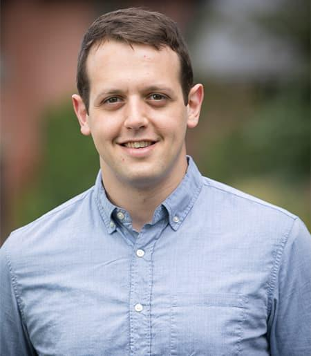
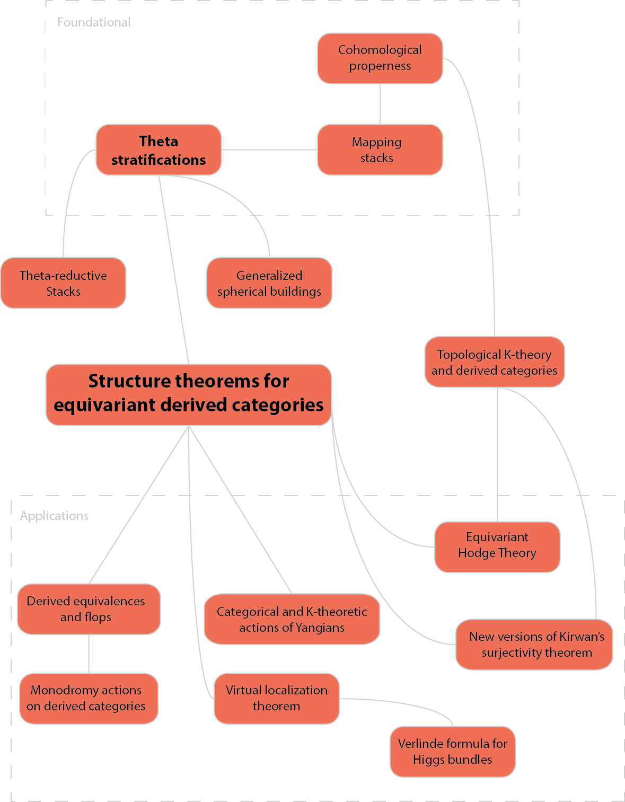

A common kind of problem in algebraic geometry is to find a space, called a moduli space, parameterizing isomorphism classes of some kind of algebro-geometric objects -- let's call them widgets. Many attempts to form a moduli space for widgets proceed by finding a scheme, $X$, which parameterizes a family of widgets, and an algebraic group, $G$, acting on $X$ such that points in the same orbit under $G$ parameterize isomorphic widgets. Then hopefully one can apply geometric invariant theory to find an open subset in X which has a good quotient under the action of $G$, and whose $G$-orbits classify ``semistable'' widgets. However, there are many situations where a stability condition can be specified on widgets without referring to any GIT problem. We discuss a framework for defining a notion of semistability for an arbitrary moduli problem, and we introduce a structure on the unstable locus, which we call a Theta-stratification, which generalizes classical stratifications of the unstable locus in GIT as well as of the moduli of vector bundles on a curve. We identify a class of moduli problems, which we call $\Theta$-reductive, for which the GIT story carries over nicely into this more general framework -- for these stacks the existence of a $\Theta$-stratification on the unstable locus can be reduced to checking a relatively simple hypothesis.
Recent Activity
|
 |
Research
Below is a selection of my research projects, organized into three main themes. A full and up-to-date list of my articles is available here and on my Google Scholar page.
Moduli Theory, Beyond GIT
My work built a bridge between geometric invariant theory, which is a collection of results describing the orbit structure for the action of a reductive group on an algebraic variety, with the intrinsic approach to moduli theory in algebraic geometry, i.e., the theory of algebraic stacks. In the past few years, I have been focused on applying the general theory to various moduli problems of interest in algebraic geometry.
Structure of Derived Categories
The derived category of a variety $X$ is an $\infty$-category that encodes all information about coherent sheaves on $X$ and their cohomology. Remarkably, derived categories often have structures and symmetries that are not visible on the level of coherent sheaves alone. My work has shed light on these structures, especially in the setting of equivariant coherent sheaves for the action of a group on $X$, taking inspiration from mathematical physics and homological mirror symmetry.
Machine Learning for Mathematics
Since 2017, I have had a side interest in machine learning, and it has recently taken a larger role in my research effort. I have investigated applications of reinforcement learning to computer algebra, and more recently applications of large language models to formalization of mathematical arguments.
Moduli Theory, Beyond GIT
We establish an algebraic approach to prove the properness of moduli spaces of K-polystable Fano varieties and reduce the problem to a conjecture on destabilizations of K-unstable Fano varieties. Specifically, we prove that if the stability threshold of every K-unstable Fano variety is computed by a divisorial valuation, then such K-moduli spaces are proper. The argument relies on studying certain optimal destabilizing test configurations and constructing a Theta-stratification on the moduli stack of Fano varieties.
- "On properness of $K$-moduli spaces and optimal degenerations of Fano varieties" with Harold Blum, Yuchen Liu, and Chenyang Xu (arXiv:2011.01895)
We prove that K-polystable log Fano pairs have reductive automorphism groups. In fact, we deduce this statement by establishing more general results concerning the S-completeness and $\Theta$-reductivity of the moduli of K-semistable log Fano pairs. Assuming the conjecture that K-semistability is an open condition, we prove that the Artin stack parametrizing K-semistable Fano varieties admits a separated good moduli space.
- "Reductivity of the automorphism group of K-polystable Fano varieties" with Jarod Alper, Harold Blum, and Chenyang Xu (arXiv:1906.03122)
One essential feature of a scheme $X$ which is flat and proper over a base $S$ is that for any scheme $Y$ which is of finite type over $S$, there is an algebraic space $Map(X,Y)$ classifying maps from $X$ to $Y$. There are extensions of this statement when $X$ is a proper stack over $S$ and $Y$ has some reasonable hypotheses. While studying the notion of instability in algebraic geometry, I noticed that the quotient stack $\bC / \bC^\ast$ has this property as well. This lead to long investigation with Anatoly Preygel into just what properties of a stack X guarantee the existence of algebraic mapping stacks into "geometric" target stacks. We reformulated the notion of "properness" for algebraic stacks in terms of properties of the derived category of those stacks, in such a way that these categorical properties guarantee the existence of algebraic mapping stacks. Our notion generalizes the classical definition of proper Artin stacks, but in addition there are many global quotient stacks which are definitely not proper in the classical sense but are "proper" in our sense. We were able to construct a very large class of examples by introducing a notion of "projective morphism" of stacks, a property which can be readily verified in examples. Along the way, we prove some surprising new descent properties for derived categories of coherent sheaves in derived algebraic geometry.
- "Mapping stacks and categorical notions of properness," with Anatoly Preygel (arXiv:1402.3204)
We provide a short and self-contained argument for the existence of Cartan-Iwahori-Matsumoto decompositions for reductive groups.
- "Cartan-Iwahori-Matsumoto decompositions for reductive groups" with Jarod Alper and Jochen Heinloth (arXiv:1903.00128)
We provide necessary and sufficient conditions for when an algebraic stack admits a good moduli space. This theorem provides a generalization of the Keel-Mori theorem to moduli problems whose objects have positive dimensional automorphism groups. We also prove a semistable reduction theorem for points of algebraic stacks equipped with a $\Theta$-stratification. Using these results we find conditions for the good moduli space to be separated or proper. To illustrate our method, we apply these results to construct proper moduli spaces parameterizing semistable $G$-bundles on curves.
- "Existence of good moduli spaces for algebraic stacks" with Jarod Alper and Jochen Heinloth (arXiv:1812.01128)
Any map between algebraic stacks $f: \fX \to \fY$ yields a symmetric monoidal functor between derived categories of quasicoherent sheaves $f^\ast : QC(\fY) \to QC(\fX)$. Jacob Lurie showed that when $\fY$ is geometric (meaning quasicompact with affine diagonal), $f$ can be uniquely recovered from $f^\ast$, and the symmetric monoidal functors arising in this way are those satisfying certain hypotheses (continuous, preserving connective objects and flat objects). We generalize this result, showing that for many stacks, it is not necessary to show that $f$ preserves flat objects. This seemingly minor modification allows for a much wider range of applications of this "Tannakian formalism."
"Tannaka duality revisited" with Bhargav Bhatt (arxiv:1507.01925)
Structure of Derived Categories
A follow up to "The derived category of a GIT quotient." The theory of $\Theta$-stratifications generalizes a classical stratification of the moduli of vector bundles on a smooth curve, the Harder-Narasimhan-Shatz stratification, to any moduli problem that can be represented by an algebraic stack. We use methods from derived algebraic geometry to develop a structure theory, which is a refinement of the theory of local cohomology, for the derived category of quasi-coherent complexes on an algebraic stack equipped with a $\Theta$-stratification. We then apply this to the $D$-equivalence conjecture, which predicts that birationally equivalent Calabi-Yau manifolds have equivalent derived categories of coherent sheaves. We prove that any two projective Calabi-Yau manifolds that are birationally equivalent to a smooth moduli space of Gieseker semistable coherent sheaves on a $K3$ surface have equivalent derived categories. This establishes the first known case of the $D$-equivalence conjecture for a birational equivalence class in dimension greater than three.
- "Derived $\Theta$-stratifications and the D-equivalence conjecture." (draft; last update 10/01/20)
- These results were originally announced in the paper ``Theta-stratifications, Theta-reductive stacks, and applications"
Preliminary versions: The above paper unites, generalizes, and corrects minor errors in two previous notes. I am preserving them here for reference.
- "The D-equivalence conjecture for moduli spaces of sheaves on a K3 surface" (draft; last update 2/08/17) -- proves that under suitable genericity hypotheses, a variation of good moduli space for a derived stack with self-dual cotangent complex results in a derived equivalence, and sketches the main application to the D-equivalence conjecture.
- "An appendix to 'Theta stratifications and derived categories'" (draft; last update 2/04/15) -- proves a version of the main theorem for global quotient stacks, which is enough for many applications
This is a short note which discusses a construction involving equivariant derived categories which allows one to state a categorical version of the classical Atiyah-Bott localization formula. The classical theorem states that for a smooth manifold with a $\bC^\ast$-action, the fundamental class in equivariant cohomology can be decomposed as a finite sum with each term corresponding to a connected component of the fixed locus, but in order to do this one must formally invert certain elements in the equivariant cohomology of the point. We show that if $X$ is a smooth scheme, then the structure sheaf of $X$ admits a filtration whose associated graded pieces correspond to connected components of the fixed locus, but in order to do this one must work in a slightly larger category of equivariant complexes, which we define.
"A categorification of the Atiyah-Bott localization formula; last update 5/21/2016
The Verlinde formula expresses the dimension of the space of global sections of certain "determinant" line bundles on the moduli of principal $G$ bundles on a smooth curve $\Sigma$, where $G$ is a semisimple group. We prove an analog of the Verlinde formula on the moduli space of semistable meromorphic $G$-Higgs bundles over a smooth curve for a reductive group $G$ whose fundamental group is free. The formula expresses the graded dimension of the space of sections of a positive line bundle on the moduli space of Higgs bundles as a finite sum whose terms are indexed by formal solutions of a generalized Bethe ansatz equation on the maximal torus of $G$.
"The equivariant Verlinde formula on the moduli of Higgs bundles" with an appendix by Constantin Teleman (arxiv:1608.01754)
This proves a version of what I like to call the ``magic windows" theorem for a fairly general class of quotient stacks: those which are quotients of a linear representation $V$ of a reductive group $G$ (where the representation is ``quasi-symmetric"). The magic windows theorem identifies (under some mild hypotheses) a subcategory of the equivariant derived category of coherent sheaves on $V$ with the derived category of coherent sheaves on any GIT quotient of $V$ which is a scheme or more generally a Deligne-Mumford stack. Applications include:
- Explicit combinatorial bases in the K-theory and cohomology of GIT quotients of this kind
- Many new examples of derived equivalences between different Deligne-Mumford GIT quotients of linear representations of this kind
- Fitting these derived equivalences together to form a representation of the fundamental group(oid) of the complexified Kaehler moduli space of the GIT quotient, and
- Equivalences (under some mild hypotheses) between all Deligne-Mumford hyperkaehler quotients of a symplectic representation of a reductive group
"Combinatorial constructions of derived equivalences" with Steven Sam (arxiv:1601.02030)
We develop a version of Hodge theory for a large class of smooth cohomologically proper quotient stacks $X/G$ analogous to Hodge theory for smooth projective schemes. We show that the noncommutative Hodge-de Rham sequence for the category of equivariant coherent sheaves degenerates. This spectral sequence converges to the periodic cyclic homology, which we canonically identify with the topological equivariant $K$-theory of $X$ with respect to a maximal compact subgroup $M \subset G$. The result is a natural pure Hodge structure of weight $n$ on $K^n_M(X^{an})$. We also treat categories of matrix factorizations for equivariant Landau-Ginzburg models.
- "Equivariant Hodge theory and noncommutative geometry" with Daniel Pomerleano (arxiv:1507.01924)
In geometric invariant theory (see below), the GIT quotient of $X/G$ depends on a choice from a continuous set of parameters. Nevertheless, the parameter space breaks down into "chambers" within which the GIT quotient does not vary, and these chambers are separated by "walls." When the parameters cross a wall, the GIT quotient is modified by a "birational transformation." I have been studying how the geometry and especially the derived geometry of the GIT quotient changes under such a wall crossing. For the special case of these wall crossings known as a "generalized flop," the derived geometry of the GIT quotient does not change at all. These cases are especially interesting -- they can reveal new symmetries of the derived category of the GIT quotient which do not arise in the classical geometry.
- "Autoequivalences of derived categories and variation of GIT quotient," with Ian Shipman (arxiv:1303.5531)
If an algebraic group $G$ acts on an algebraic variety $X$, such as $\bC^\ast$ acting on affine space by dilation, is there a meaningful notion of a "space of orbits" for that action? Mumford's geometric invariant theory (GIT) answers this question by constructing a well-behaved orbit space for the action of $G$ on an open subset of "semistable points" of $X$. Many of the algebraic varieties we know and love (partial flag varieties, toric varieties,...) can be presented as GIT quotients of affine spaces. Since the 1980's, many beautiful relationships between the geometry and topology of the GIT quotient and the "equivariant" geometry of $X$ have been discovered. My research extends these relationships to the "derived" equivariant geometry of $X$ and the derived geometry of the GIT quotient.
- The final version treats quotient stacks X/G subject to a certain technical hypothesis on the stratification (arxiv:1203.0276)
- For newcomers, I'd recommend first looking at the version which treated just the smooth case (arxiv:1203.0276v2). Warning: This version contains some errors in the description of the stratification that I corrected in the final version.
- Notes from an introductory talk
Machine Learning for Mathematics
Studying the set of exact solutions of a system of polynomial equations largely depends on a single iterative algorithm, known as Buchberger's algorithm. Optimized versions of this algorithm are crucial for many computer algebra systems (e.g., Mathematica, Maple, Sage). We introduce a new approach to Buchberger's algorithm that uses reinforcement learning agents to perform S-pair selection, a key step in the algorithm. We then study how the difficulty of the problem depends on the choices of domain and distribution of polynomials, about which little is known. Finally, we train a policy model using proximal policy optimization (PPO) to learn S-pair selection strategies for random systems of binomial equations. In certain domains, the trained model outperforms state-of-the-art selection heuristics in total number of polynomial additions performed, which provides a proof-of-concept that recent developments in machine learning have the potential to improve performance of algorithms in symbolic computation.
- "Learning selection strategies in Buchberger's algorithm" with Dylan Peifer and Mike Stillman (arXiv:2005.01917)
This project is under development. With an interdisciplinary group of collaborators, I have designed a benchmark dataset that specifically targets a task that will be immediately useful for working mathematicians but is also challenging enough to be useful for machine learning researchers. Please email if you are interested in learning more or contributing.
The idea is that each datapoint will be a blueprint for the proof of a very challenging known result in research-level mathematics. The datapoint includes definition, lemma, and theorem statements in Lean4, and it includes proofs in natural language. The task is for the model to use the natural language arguments and the directed graph of logical dependencies between statements to fill in correct proofs in Lean4 for all missing proofs.
I worked with the team at Harmonic.fun to develop their ``Aristotle" system to solve problems from the International Mathematical Olympiad. The system uses language models to do an enhanced tree search for proofs of lemma statements in Lean4. In July 2025, the system achieved a perfect score on 5 out of the 6 problems at IMO 2025, a gold-medal score. The system is still under development, but these results suggest that it has the potential to be a powerful tool for solving challenging mathematical problems.
Talks and expository writing
The Moduli Space (web book)
During the Spring 2020 term, I taught a graduate topics course on "Modern moduli theory," which I have reformatted into a web-based book.
We surveyed the theory of algebraic stacks (fibered categories and descent, quasi-coherent sheaves, quotient stacks, deformation theory, and Artin's criteria, Tannaka duality), then discussed more recent advances (the etale local structure theorems of Alper, Hall, and Rydh, and the results of beyond GIT), and applied these methods to the moduli of vector bundles and principal G bundles over a smooth curve.
Moduli of objects in dg-categories (2025)
Talk at Homological Mirror Symmetry conference in honor of Maxim Kontsevich's 60th birthday. I use recent results in moduli theory to give an intrinsic formulation of homological mirror symmetry, and I introduce some conjectures in symplectic topology that would imply it.
View Slides →ICBS Talk (July 2024)
A proceedings paper On the structure of equivariant derived categories for the 2024 International Congress of Basic Science, based on my acceptance talk for a Frontiers of Science Award.
View Paper →Swiss Lectures (2017)
Notes from lectures on Theta-stability and existence of good moduli spaces, with applications to Donaldson invariants.
Colloquium Talk (2017)
A colloquium-style slide talk on applications of beyond GIT to the D-equivalence conjecture.
View Slides →AMS Proceedings (2015)
Proceedings paper for the AMS summer algebraic geometry institute (SLC, 2015).
Oberwolfach Report
Θ-reductive moduli problems, stratifications, and applications - Brief report from Oberwolfach workshop.
Read Report →Graduate advising
I am currently accepting graduate advisees. If you are interested in working with me as your PhD advisor, please read my advising philosophy, which sets mutual expectations.
Recent Graduate Students

Jeffrey Jiang
MS 2022
Beyond geometric invariant theory concept map
One of the great challenges of research mathematics is effectively communicating mathematical ideas. In 2016, I created this concept map describing the "beyond GIT" project at the time. It needs updating, but it's a good starting point. Notably absent are the theorem on existence of good moduli spaces, and applications to the moduli of K-semistable Fano varieties.
